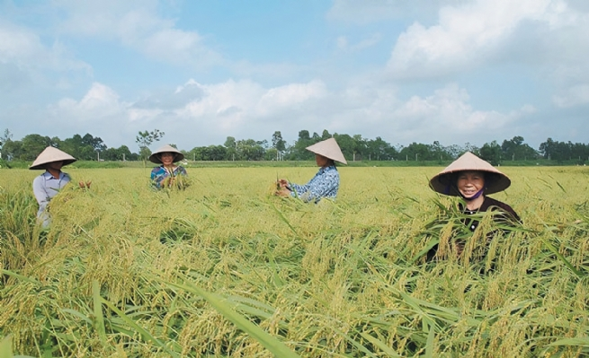
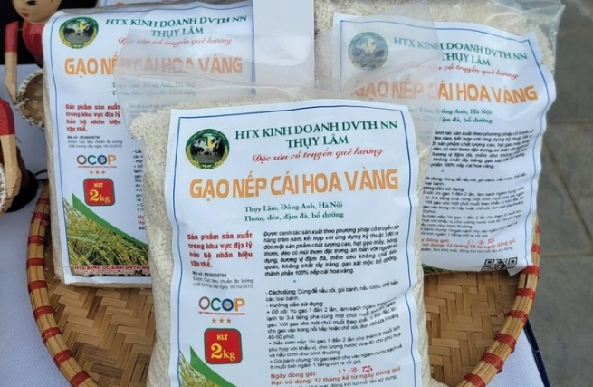

Yellow-Pollen Sticky Rice Aims for Brand Development and Market Expansion
Yellow-pollen sticky rice, a delicious glutinous round-grain variety, thrives in specific soil and cultivation conditions. With suitable soil and experienced farmers, Thuy Lam commune has successfully developed a thriving yellow-pollen sticky rice growing area in recent years.
Currently, farmers in Thuy Lam commune only grow yellow-pollen sticky rice once a year with a total area of over 570 ha, all its arable rice-growing area.
Thuy Lam yellow-pollen sticky rice is a renowned OCOP product of Dong Anh district. In 2019, it was awarded a 3-star OCOP certification, paving the way for brand development and market expansion.
Currently, Thuy Lam commune is growing yellow-pollen sticky rice on about 570 ha. Farmers only grow one crop a year, using the SRI improved rice cultivation method in which no pesticides are used but the yield is always high.
Nguyen Thi Cuc, Director of Thuy Lam Agricultural Cooperative, said: Thuy Lam has fertile soil, suitable for crop cultivation, especially rice. In particular, this land has long been planted with yellow-pollen sticky rice, a specialty. Thuy Lam currently has about 545 ha of yellow-pollen sticky rice of which the growing season starts in the sixth lunar month and the harvest time is around the 11th lunar month.
Since the 2010 crop, with training and support from Hanoi agricultural agencies, farmers in Thuy Lam commune have boldly adopted the SRI rice cultivation method. Accordingly, the amount of fertilizer and especially pesticide has been cut by more than half compared to before, but the rice has achieved high productivity. With its outstanding quality, at the end of 2013, the yellow-pollen sticky rice of Thuy Lam commune was granted a collective trademark by the National Office of Intellectual Property of Vietnam (NOIP) under the Ministry of Science and Technology.
“In addition to high output, the quality of yellow-pollen sticky rice of Thuy Lam Agricultural Cooperative is also the best among other sticky rice varieties on the market. When cooked, Thuy Lam glutinous rice is pure and dry, soft but unbroken, full round, fragrant and well-flavored. The well-done rice is soft, shiny, and lightly fragrant. The yellow-pollen sticky rice is processed into many dishes such as steamed sticky rice, banh chung, and wine. Banh chung made from yellow-pollen sticky rice can be kept for a long time without being hardened or moldy like some other kinds of sticky rice. Besides banh chung, on the Tet holiday, every family in Thuy Lam brews a few liters of wine from yellow-pollen sticky rice to enjoy, entertain guests and present it to their relatives,” she added.
In recent years, Thuy Lam people have produced and sold yellow-pollen sticky rice throughout the country. The product is well-known, trusted and ordered in large quantities by consumers. Nowadays, Thuy Lam yellow-pollen sticky rice has become famous in Hanoi and other markets because it has high nutritional value, 100% pure rice grains, produced by traditional methods, featured with a characteristic aroma, soft and sticky grain, sold at reasonable prices, and packaged in small bags for convenient use.
After achieving the 3-star OCOP certification, the cooperative has received valuable support from Dong Anh district and Hanoi agricultural agencies to develop the brand and promote trade. However, it remains hard to expand its consumer market. Nguyen Tuan Ha, Director of Dong Anh Economic Office, said that to develop OCOP products, Dong Anh has allocated funds for certified products to boost brands, sales channels and promotional activities through trade fairs and trade promotion programs of the district and the city. Nonetheless, to promote consumption, owners need to actively develop their brands and build specific marketing roadmaps.
Nguyen Van Chi, Standing Deputy Chief of the Hanoi Coordination Office for New Rural Development, said: Participating in the OCOP Program, farmers and cooperatives need to change their awareness of building stories for their products; pay attention to all production stages; invest in packaging, designs, labels and brands associated; and promote and develop the market. “OCOP entities need to pay more attention to packaging and naming products. This must be given the proper focus to bring OCOP products into full play,” he emphasized.
To overcome existing shortcomings, Director Cuc said that Thuy Lam Agricultural Cooperative is centering on packaging design, investing in harvesting and drying systems to improve product quality. The cooperative also launched a website to introduce its products on the internet.
Nguyen Xuan Dai, Director of the Hanoi Department of Agriculture and Rural Development, said, the list of Hanoi’s OCOP products has been increasingly diversified, with high quality and traceable origin. Not only traders but also many OCOP producers have focused on applying science and technology to create beautiful, sophisticated and unique product designs and packaging, and utilized local advantageous resources and traditional culture. As a result, many OCOP products have been exported well and accepted by consumers in demanding markets such as Europe, South Korea and Japan. This proves that Hanoi’s OCOP products are constantly being invested in and upgraded. For its part, Dong Anh has continuously developed, actively upgraded, expanded the market and built brands for its OCOP products, including Thuy Lam yellow-pollen sticky rice.